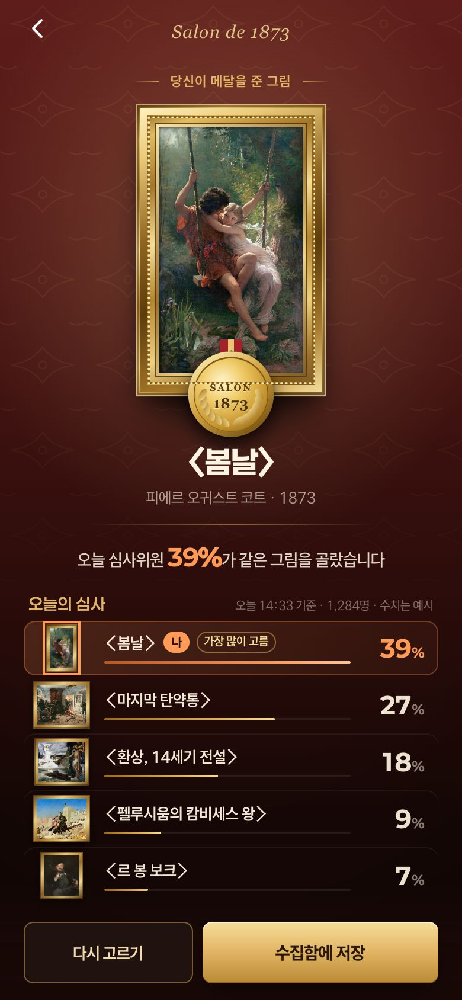
아카데미 살롱
살롱 후보작 다섯 점 가운데 한 점에 올해의 메달을 줍니다.
MONET 100 · 신세계 더 헤리티지 4층 · 앱 체험
1874년 파리 사람이 되어 하나를 고르면,
오늘 다른 관람객의 선택이 바로 보입니다.
방마다 세 걸음
방에 들어서면 폰 속에 그 시절의 장면이 열립니다.
정답 없는 질문 하나. 그 시대 사람이 되어 답합니다.
고르자마자 오늘 관람객이 어떻게 골랐는지 보입니다.
고르고 나서 남의 선택을 보는 방식이 통한다는 건 이미 여러 번 증명됐습니다.
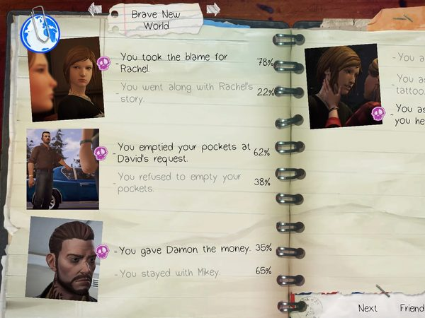
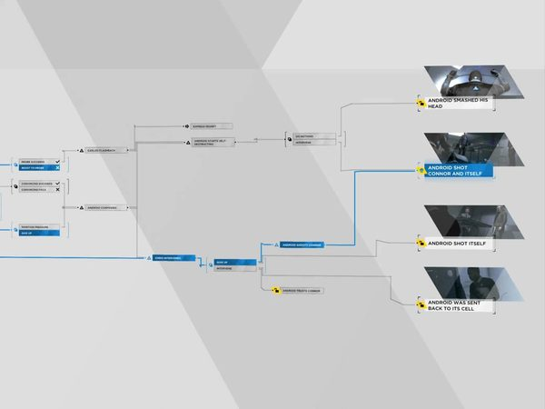
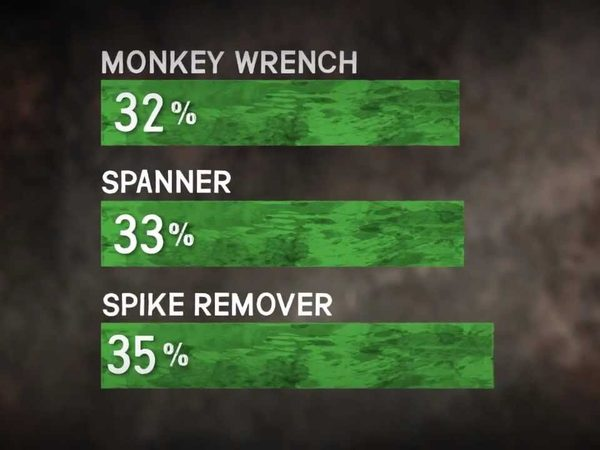
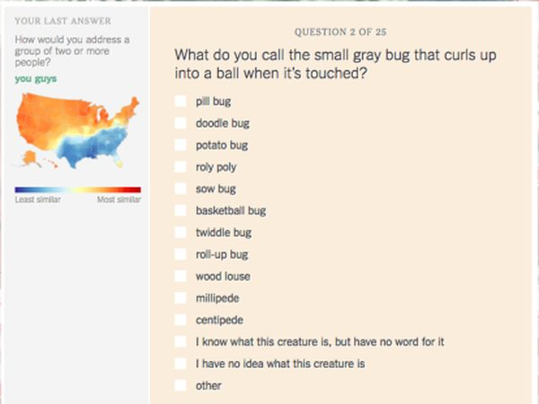
여섯 개의 방
관람객이 작품 한 점 앞에 머무는 시간은 평균 30초가 채 안 됩니다.
할 일이 하나 있으면, 그 앞에 서게 됩니다. Smith 외, 2017 · 시카고 미술관 28.6초

살롱 후보작 다섯 점 가운데 한 점에 올해의 메달을 줍니다.
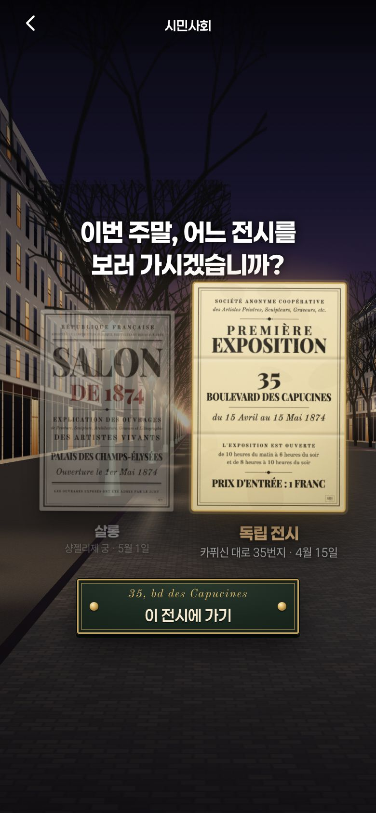
거리의 광고탑에서 전시 안내문을 찾아, 이번 주말 살롱과 독립 전시 중 한 곳을 고릅니다.
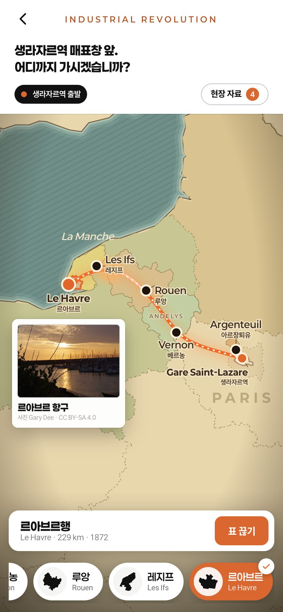
생라자르역에서 행선지를 고르면 그해의 기차표가 나오고, 모네의 그림으로 엽서를 씁니다.
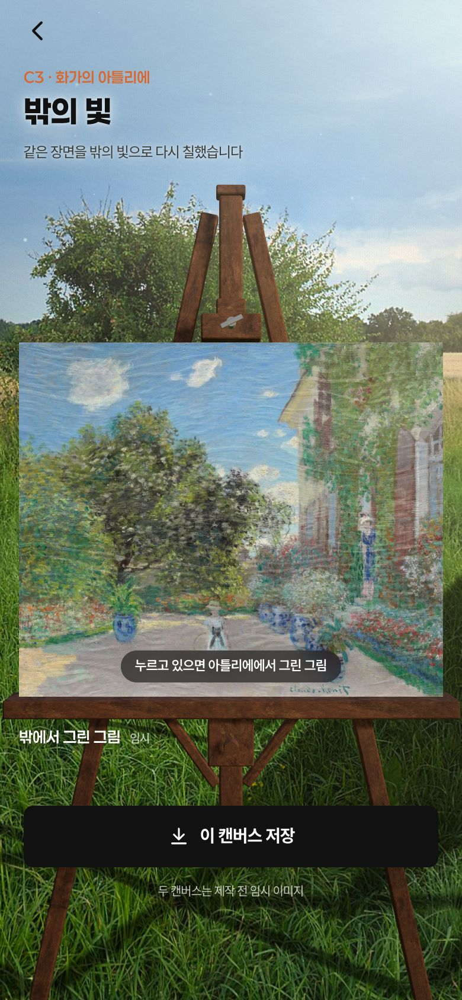
어두운 화실 그림을 바깥 빛으로 다시 칠하면, 화실이 여름 들판으로 바뀝니다.
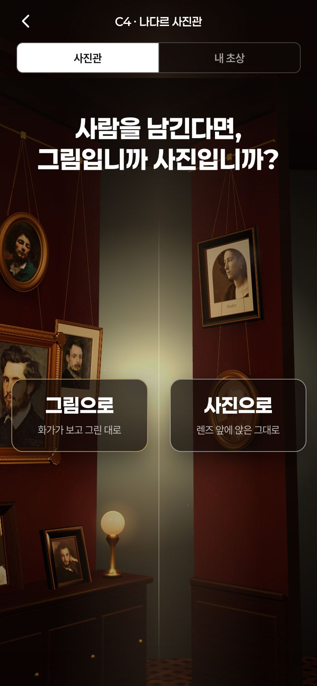
벽의 초상화가 사진으로 바뀝니다. 사람을 남긴다면, 그림일까 사진일까.
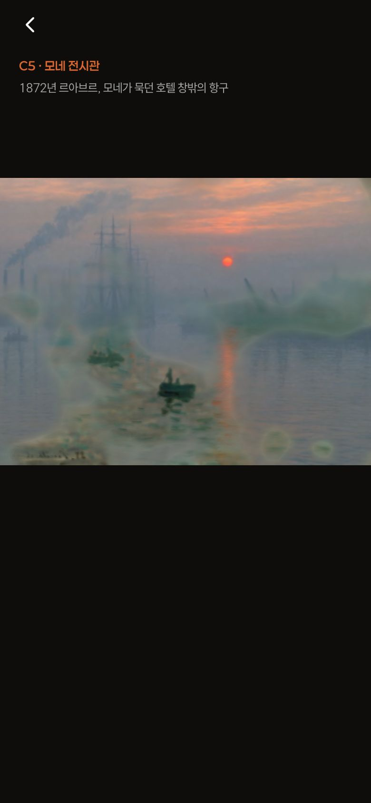
〈인상, 해돋이〉를 비추면 1872년 르아브르의 아침이 펼쳐졌다가, 다시 그림이 됩니다.
출구
두 번의 큰 선택을
1874년과 오늘의 관람객 옆에 나란히 놓습니다.
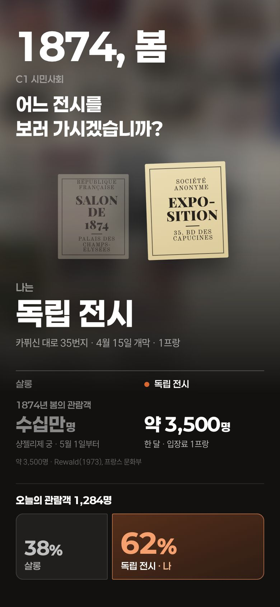
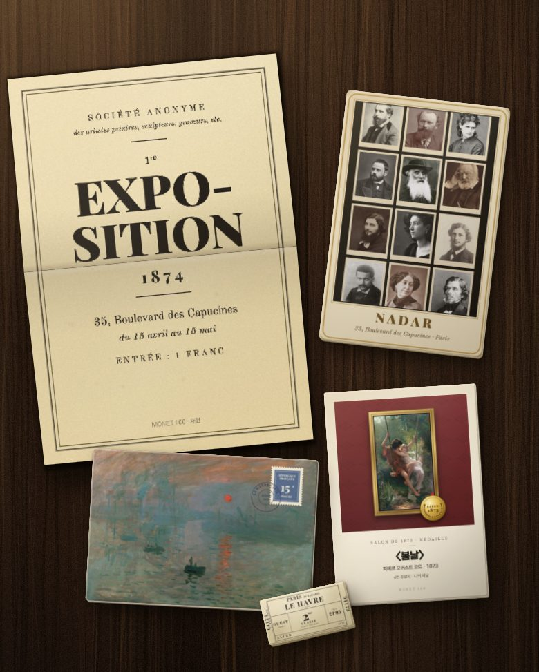